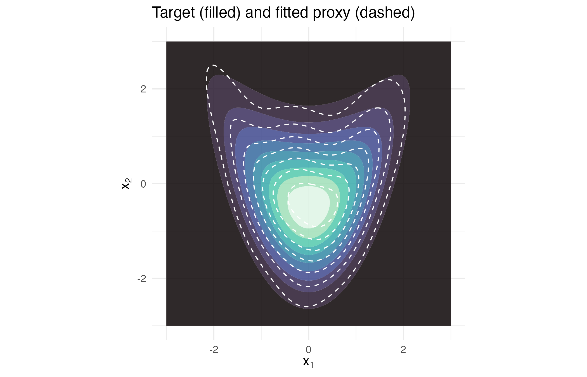

Fitting a proxy to a density you cannot sample
Source:vignettes/articles/extended/quickstart.Rmd
quickstart.Rmd
# the figure below is drawn only when ggplot2 is installed
has_ggplot2 <- requireNamespace("ggplot2", quietly = TRUE)The problem
An analyst arrives with a function and no sampler. I can write down a function that returns the log-density of the thing I care about, and I have no way to draw from it. Can I get a compact object I am able to sample, marginalise and condition – and how would I know the fit is any good? Both halves matter. The first is what the package does; the second is what stops a plausible-looking mixture being trusted when the numerical machinery behind it has quietly failed.
Package capabilities
A gmm_target() is the target: a dimension, a
log_density callable, and optionally samples. The built-in
banana_target() used below carries an exact, normalised
log-density and deliberately no samples, so only the evaluate-only
regime applies to it.
fit_proxymix() is the single fitting verb. It routes to
one of three regimes on what the target can supply, and the table under
Addressing the problem states the routing rule. The regime for
a target that can only be evaluated is "kld":
importance-sampled KLD-EM, which needs only point-wise evaluation of the
target.
A proposal_mvt() is the importance proposal that regime
feeds on: a multivariate Student-t whose heavy tails keep the
self-normalised weights from collapsing onto a handful of draws.
gmm_fit_quality() is the fit’s certificate: whether the
iteration converged, whether the importance sample degenerated, the
effective sample size, the largest single weight, and the held-out
validation gap. It answers the second half of the question, and it
travels with the fit through every operation downstream.
dgmm(), rgmm(),
gmm_marginalise() and gmm_conditionalise() are
the closed-form reads off the fitted mixture: density, sampling,
integrating a coordinate out, and fixing one to a value. None of them
re-evaluates the target.
Addressing the problem
The routing rule
| Regime | Applies | Method |
|---|---|---|
"moment" |
N == 1 and the target carries samples or
moments |
Closed-form moment matching |
"sample" |
N >= 2 and the target carries
samples |
Classical expectation-maximisation |
"kld" |
the target carries log_density only |
Importance-sampled KLD-EM |
Only the third row is available for a target that cannot be sampled,
and that is the setting the sample-based mixture packages on CRAN
(mclust, Scrucca et al., 2016; mixtools,
Benaglia et al., 2009; flexmix, Grün and Leisch, 2008) do
not address: all three of them require independent draws.
A target with no sampler
The bundled banana target is a non-Gaussian shape in the plane, obtained by warping an isotropic Gaussian through a quadratic. Its log-density is exact and normalised. Samples are not attached, so the routing table leaves one option.
tgt <- banana_target()
tgt
#> <gmm_target>: "banana" in p = 2 dimensions
#> log_density : supplied
#> samples : <absent>
#> normalised : TRUE
#> log Z(f) : 0Fit the proxy
A three-component proxy by KLD-EM, with a Student-t proposal on five degrees of freedom.
proposal <- proposal_mvt(n_dim = 2L, mean = c(0, 0),
sigma = 4 * diag(2), df = 5)
fit <- fit_proxymix(tgt, N = 3L, regime = "kld",
proposal = proposal,
is_size = 2000L,
max_iter = 60L,
seed = 1L)
fit
#> <gmm_fit>: regime = "kld", K = 3, p = 2
#> target : banana
#> iterations : 38
#> converged : TRUE
#> [1] w = 0.5345, |mu| = 0.3018, tr(Sigma) = 1.3502
#> [2] w = 0.3173, |mu| = 0.9255, tr(Sigma) = 2.0300
#> [3] w = 0.1483, |mu| = 1.5183, tr(Sigma) = 3.1396Read the certificate before anything else
quality <- gmm_fit_quality(fit)| Field | Value |
|---|---|
| regime | kld |
| converged | TRUE |
| degenerate | FALSE |
| effective sample size | 820.6 |
| ESS as a fraction of draws | 0.410 |
| smallest per-component ESS | 347.7 |
| largest single weight | 0.00206 |
| KL estimate, in-sample | 0.00275 |
| KL estimate, held-out (standard error) | 0.0126 (0.0014) |
| validation gap, held-out minus in-sample | 0.00983 |
The in-sample KL estimate is computed on the draws the fit was tuned to, so it reads lower than the held-out estimate, which the fit computes on 20,000 fresh draws.
Overlay the proxy on the target
grid_x <- seq(-3, 3, length.out = 120L)
grid_g <- expand.grid(x1 = grid_x, x2 = grid_x)
grid_mat <- as.matrix(grid_g)
grid_g$target <- exp(tgt@log_density(grid_mat))
grid_g$proxy <- dgmm(grid_mat, fit)
ggplot2::ggplot(grid_g, ggplot2::aes(x1, x2)) +
ggplot2::geom_contour_filled(ggplot2::aes(z = target), bins = 10L,
alpha = 0.85) +
ggplot2::geom_contour(ggplot2::aes(z = proxy), colour = "white",
linetype = "dashed", linewidth = 0.45, bins = 8L) +
ggplot2::scale_fill_viridis_d(option = "mako", guide = "none") +
ggplot2::coord_equal() +
ggplot2::labs(
title = "Target (filled) and fitted proxy (dashed)",
x = expression(x[1]), y = expression(x[2])
) +
ggplot2::theme_minimal(base_size = 11)
The banana target (filled contours) with the fitted three-component proxy overlaid as dashed contours. The proxy contours bend along the ridge. Its held-out KL estimate is 0.0126 (Monte Carlo standard error 0.0014), from an effective sample size of 821 draws out of 2000.
The closed-form reads
Because the fit is a Gaussian mixture, integrating a coordinate out and fixing one to a value are exact algebra, not further target evaluations.
marg <- gmm_marginalise(fit, keep = 1L)
cond <- gmm_conditionalise(fit, given = c(NA, 0.5))
# weight, mean and standard deviation of each component of a 1-D mixture
components_1d <- function(g) {
data.frame(weight = gmm_weights(g),
mean = vapply(gmm_means(g), `[[`, numeric(1L), 1L),
sd = sqrt(vapply(gmm_covariances(g), `[[`, numeric(1L), 1L)))
}
round(components_1d(marg), 4L)
#> weight mean sd
#> 1 0.5345 -0.1866 0.6646
#> 2 0.3173 0.9236 0.6576
#> 3 0.1483 -1.3524 0.7196
round(components_1d(cond), 4L)
#> weight mean sd
#> 1 0.5597 -0.2553 0.6586
#> 2 0.3179 1.0803 0.4806
#> 3 0.1224 -1.2816 0.3918The first table is the proxy’s density of ; the second is its density of given .
Draws from the proxy are exact and cheap, while the target has no sampler.
Interpretation
The fit answers the first half of the question. The proxy is a 3-component mixture in 2 dimensions, reached in 38 KLD-EM iterations, and it supports sampling, marginalisation and conditioning with no further access to the target at all. In the overlay the proxy’s contours bend along the ridge, which the elliptical contours of a single Gaussian cannot do, and that is the reason for fitting a mixture instead of a single Gaussian.
The certificate answers the second half. The iteration converged, and the fit is not flagged as degenerate. The importance sample retained an effective size of 821 out of 2,000 draws, a retention of 41 per cent, and the largest single self-normalised weight is 0.0021, so no individual draw is carrying the fit. The smallest per-component effective sample size is 348, so every one of the three components was estimated from a substantial share of the draws rather than from a handful. The held-out KL estimate is 0.0126 with a Monte Carlo standard error of 0.0014. The in-sample estimate of 0.0028 is lower by the validation gap of 0.0098, which is about 7 standard errors of the held-out estimate.
Read the certificate in that order – converged, degenerate, effective sample size, largest weight, validation gap – and a fit that has failed announces itself before any downstream number is taken seriously.
Limitations
This vignette fits one target in two dimensions and reads the fit
that results. It does not choose the number of components, which is left
at three by hand here; select_N() and
bic_aic() do that job, and a component count too low for
the shape shows up as a residual KL that more importance draws will not
reduce. It also says nothing about how the choice of proposal changes
the answer. The Student-t proposal used above is wide enough to cover
the banana and heavy-tailed enough to keep the weights spread, and a
proposal that misses the target’s mass produces a fit whose certificate
is worthless even though the printed mixture looks ordinary.
The effective sample size reported here is a two-dimensional number.
Importance sampling degrades quickly with dimension, and a proxy of the
same nominal quality in five or ten dimensions demands far more draws
for the same retention. The certificate is what makes that degradation
visible rather than silent, and it is reported on every fit in the
"kld" regime.
Nothing above compares the proxy with the other ways of getting at a density that can be evaluated but not sampled. The numerical illustration that follows places it beside a Laplace approximation, a Markov chain Monte Carlo run and a mixture fitted to that run’s draws, all scored against the same quadrature of the target.
Numerical illustration
There is no dataset in this vignette: a target that can only be evaluated has no sample by definition, so the illustration is a simulation.
A simulation benchmark
The simulation fits the banana target 200 times by each of five routes and scores every fit against the same reference: a midpoint-rule quadrature of the exact target density on a grid of step 0.05 over , whose cells sum to a mass of 0.999997. Two things are scored. The first is the Kullback-Leibler divergence , with the target and the fitted density, computed on the grid, which only the routes that return a density can be given. The second is the mass in the tail , which the quadrature puts at 0.02274 against the exact value , and which a sampler answers by counting its draws. Each route’s wall time is recorded, and so is the number of values the user had to set in the code shown, other than a seed.
The five routes are proxymix with the number of components chosen by
select_N() at its defaults; a Laplace approximation, the
single Gaussian whose mean is the mode and whose covariance is the
inverse curvature there (Tierney and Kadane, 1986); the no-U-turn
sampler (NUTS; Hoffman and Gelman, 2014) of Stan through cmdstanr at its
defaults, four chains of 1000 warm-up and 1000 sampling iterations run
in sequence (Carpenter et al., 2017); mclust fitted to those NUTS draws
(Scrucca et al., 2016), with G = 1:6, the candidate set
select_N() uses, and the unconstrained covariance family,
which is the family proxymix fits; and the differential-evolution
sampler DEzs (ter Braak and Vrugt, 2008) of BayesianTools (Hartig et
al., 2026) at its default of 10,000 iterations, which version 0.1.9
spreads over three internal chains, given a box prior wide enough to
hold all of the target’s mass, with the first 999 iterations of each
chain discarded. The Laplace route is one call to optim()
and a matrix inverse, and its density is evaluated with
dmvnorm() from mclust. The Stan program is compiled once,
in the run that produced the stored results, and not when this vignette
renders.
mclust and BayesianTools install from CRAN. cmdstanr is not on CRAN
and installs from the Stan R-universe repository,
stan-dev.r-universe.dev. It also needs a CmdStan installation, which
cmdstanr::install_cmdstan() provides:
install.packages(c("mclust", "BayesianTools"))
install.packages("cmdstanr",
repos = c("https://stan-dev.r-universe.dev",
getOption("repos")))This chunk is complete and runs as shown, but it took about 15
minutes on one core (R 4.6.1, Apple silicon); the results below are read
from its stored output. Changing n_rep <- 200L to
n_rep <- 10L gives a reduced run of about 44 seconds
plus the compilation of the Stan program.
library(proxymix)
library(cmdstanr)
library(mclust)
library(BayesianTools)
n_rep <- 200L # replicates
tgt <- banana_target()
# midpoint-rule quadrature; the target's mass outside the box is below 1e-5
h <- 0.05
grid <- as.matrix(expand.grid(x1 = seq(-5 + h / 2, 5, by = h),
x2 = seq(-5 + h / 2, 12, by = h)))
log_f <- tgt@log_density(grid)
f_grid <- exp(log_f)
tail_ref <- sum(f_grid[grid[, 1L] > 2]) * h^2
kl_of <- function(log_g) sum(f_grid * (log_f - log_g)) * h^2
# mass above x1 = 2 under a Gaussian mixture, from its x1 marginal
tail_of <- function(w, mean1, sd1) {
sum(w * pnorm(2, mean1, sd1, lower.tail = FALSE))
}
# the same target as a Stan program, compiled once for the whole run
stan_file <- file.path(tempdir(), "banana.stan")
writeLines(c(
"parameters {",
" vector[2] x;",
"}",
"model {",
" target += -0.5 * (square(x[1])",
" + square(x[2] - 0.5 * (square(x[1]) - 1)));",
"}"), stan_file)
banana_stan <- cmdstan_model(stan_file)
box <- createBayesianSetup(likelihood = function(x) tgt@log_density(x),
lower = c(-6, -6), upper = c(6, 14))
# values set by the user in this code, other than seeds
tuning <- c(proxymix = 0L, Laplace = 2L, NUTS = 0L,
"NUTS + mclust" = 2L, DEzs = 3L)
timed <- function(expr) {
t0 <- proc.time()[[3L]]
value <- expr
list(value = value, secs = proc.time()[[3L]] - t0)
}
one_replicate <- function(r) {
set.seed(r)
px <- timed(select_N(tgt, seed = r))
fit <- px$value$best_fit
fit_1 <- gmm_marginalise(fit, keep = 1L)
la <- timed(optim(c(0, 0), function(x) -tgt@log_density(x),
method = "BFGS", hessian = TRUE))
la_mean <- la$value$par
la_cov <- solve(la$value$hessian)
nuts <- timed(banana_stan$sample(seed = r, refresh = 0L,
show_messages = FALSE))
draws <- nuts$value$draws("x", format = "matrix")
n_divergent <- sum(nuts$value$diagnostic_summary(
"divergences", quiet = TRUE)$num_divergent)
mc <- timed(Mclust(draws, G = 1:6, modelNames = "VVV", verbose = FALSE))
mc_par <- mc$value$parameters
de <- timed(runMCMC(box, sampler = "DEzs",
settings = list(message = FALSE)))
de_draws <- getSample(de$value, start = 1000L)
data.frame(
rep = r,
method = names(tuning),
kl = c(kl_of(dgmm(grid, fit, log = TRUE)),
kl_of(dmvnorm(grid, la_mean, la_cov, log = TRUE)),
NA,
kl_of(dens(grid, mc$value$modelName, parameters = mc_par,
logarithm = TRUE)),
NA),
tail = c(tail_of(gmm_weights(fit_1),
vapply(gmm_means(fit_1), `[[`, numeric(1L), 1L),
sqrt(vapply(gmm_covariances(fit_1), `[[`,
numeric(1L), 1L))),
pnorm(2, la_mean[1L], sqrt(la_cov[1L, 1L]), lower.tail = FALSE),
mean(draws[, 1L] > 2),
tail_of(mc_par$pro, mc_par$mean[1L, ],
sqrt(mc_par$variance$sigma[1L, 1L, ])),
mean(de_draws[, 1L] > 2)),
secs = c(px$secs, la$secs, nuts$secs, nuts$secs + mc$secs, de$secs),
n_components = c(px$value$best_n, 1L, NA, mc$value$G, NA),
divergent = c(NA, NA, n_divergent, NA, NA)
)
}
res <- do.call(rbind, lapply(seq_len(n_rep), one_replicate))
res$tail_error <- res$tail - tail_ref
sim_tab <- do.call(rbind, lapply(split(res, res$method), function(d) {
data.frame(method = d$method[1L],
kl_mean = mean(d$kl), kl_sd = sd(d$kl),
tail_bias = mean(d$tail_error),
tail_rmse = sqrt(mean(d$tail_error^2)),
# delta-method standard error of the root mean squared error
tail_rmse_se = sd(d$tail_error^2) / sqrt(nrow(d)) /
(2 * sqrt(mean(d$tail_error^2))),
secs = median(d$secs),
tuning = tuning[[d$method[1L]]],
divergent_share = mean(d$divergent > 0),
divergent_max = max(d$divergent))
}))
sim_tab| Route | KL, mean (sd) | Tail bias | Tail RMSE | Seconds | Values set |
|---|---|---|---|---|---|
| proxymix | 0.0081 (0.0031) | 0.0004 | 0.0035 | 0.70 | 0 |
| Laplace | 0.3749 (0.0000) | 0.0000 | 0.0000 | 0.00 | 2 |
| NUTS | – | -0.0001 | 0.0046 | 1.04 | 0 |
| NUTS + mclust | 0.0139 (0.0046) | -0.0003 | 0.0047 | 2.70 | 2 |
| DEzs | – | 0.0002 | 0.0055 | 0.53 | 3 |
Of the three routes that return a density, proxymix has the smallest
divergence from the target, 0.0081 nats on average against 0.0139 for
the mixture fitted to the NUTS draws, a gap of 0.0058 with an unpaired
standard error of 0.0004, and the Laplace approximation is far behind at
0.375, because one Gaussian cannot bend along the ridge. On the same
grid the three-component fit from Addressing the problem has a
divergence of 0.0154. Its held-out estimate of 0.0126 is outside two
Monte Carlo standard errors of that value. Its in-sample estimate of
0.0028 is lower than the quadrature value by a factor of 5.6.
select_N() chose 4 components in 52 per cent of the
replicates. On the tail mass no sampling route’s bias is more than two
of its standard errors from zero, and the routes differ in spread. The
proxy’s root mean squared error is 0.0035, below the 0.0046 of NUTS
counting its 4000 draws, the 0.0047 of the two-stage mixture and the
0.0055 of DEzs, and the smallest of these gaps is 3.1 standard errors of
the difference, from the delta-method standard error of each root mean
squared error. The Laplace approximation gets this tail right, at an
error of 0.00001, the size of the quadrature’s own difference from
,
because the mode and curvature of the banana in
are those of the standard normal that is its exact marginal. cmdstanr
reported divergent transitions in 135 of the 200 NUTS runs, at most 15
of the 4000 transitions in any one run, as a printed message rather than
an R warning, and the draws were kept as they were. A proxymix fit took
a median of 0.70 seconds, a NUTS run 1.04, the two-stage mixture 2.70
and DEzs 0.53; the machine was running other jobs during the run, so
these times compare with each other and not with an idle core. The
proxymix route set no values beyond the target; the Laplace route needed
a starting point and an optimiser, NUTS needed the target rewritten as a
Stan program, the two-stage route added the candidate range and
covariance family for mclust, and DEzs needed the prior box and a
burn-in.
In this run proxymix gave the smallest divergence and, after the Laplace approximation, the smallest tail error, from one call with no sampler. The Laplace approximation was exact for this tail and the fastest. NUTS needed no values set beyond the target written as a Stan program, and DEzs needed three. The comparison is one two-dimensional target with a known normaliser and a single tail probability; it says nothing about higher dimensions, multimodal targets, unnormalised posteriors, or tails further out than , and none of the samplers was tuned beyond its defaults.
Further reading
Choosing between the three fitting regimes takes the routing table above and works all three regimes end to end on a target whose ground truth is known, so the cost of choosing the wrong one is visible.
How well a mixture proxies four awkward shapes pushes the
"kld" regime across a bent ridge, an annulus, a
well-separated mixture and a compactly supported density, and shows the
package refusing a fit whose importance sample has collapsed.
The closed-form operator calculus on a mixture takes the marginalisation and conditioning shown above and adds pushforward through a linear sensor, the Bayesian update on a noisy observation, and filtering over time.
Compressing a Bayesian posterior you can evaluate but not sample is this workflow applied to an unnormalised log-posterior, with the model evidence and error bars on the fit itself.
References
- Benaglia, T., Chauveau, D., Hunter, D. R. and Young, D. S. (2009). mixtools: An R package for analyzing finite mixture models. Journal of Statistical Software 32(6), 1–29. https://doi.org/10.18637/jss.v032.i06.
- Carpenter, B., Gelman, A., Hoffman, M. D., Lee, D., Goodrich, B., Betancourt, M., Brubaker, M., Guo, J., Li, P. and Riddell, A. (2017). Stan: A probabilistic programming language. Journal of Statistical Software 76(1), 1–32. https://doi.org/10.18637/jss.v076.i01.
- Grün, B. and Leisch, F. (2008). FlexMix version 2: Finite mixtures with concomitant variables and varying and constant parameters. Journal of Statistical Software 28(4), 1–35. https://doi.org/10.18637/jss.v028.i04.
- Hartig, F., Minunno, F. and Paul, S. (2026). BayesianTools: General-purpose MCMC and SMC samplers and tools for Bayesian statistics. R package version 0.1.9. https://doi.org/10.32614/CRAN.package.BayesianTools.
- Hoffman, M. D. and Gelman, A. (2014). The No-U-Turn sampler: Adaptively setting path lengths in Hamiltonian Monte Carlo. Journal of Machine Learning Research 15(47), 1593–1623. https://jmlr.org/papers/v15/hoffman14a.html.
- Scrucca, L., Fop, M., Murphy, T. B. and Raftery, A. E. (2016). mclust 5: Clustering, classification and density estimation using Gaussian finite mixture models. The R Journal 8(1), 289–317. https://doi.org/10.32614/RJ-2016-021.
- ter Braak, C. J. F. and Vrugt, J. A. (2008). Differential evolution Markov chain with snooker updater and fewer chains. Statistics and Computing 18(4), 435–446. https://doi.org/10.1007/s11222-008-9104-9.
- Tierney, L. and Kadane, J. B. (1986). Accurate approximations for posterior moments and marginal densities. Journal of the American Statistical Association 81(393), 82–86. https://doi.org/10.1080/01621459.1986.10478240.
- van der Hoek, J. and Elliott, R. J. (2024). Mixtures of multivariate Gaussians. Stochastic Analysis and Applications. https://doi.org/10.1080/07362994.2024.2372605.
Reproduce
The fit above is seeded through fit_proxymix(seed = 1L),
and the sampling chunk draws from it after set.seed(1L), so
every number above the numerical illustration is reproducible from the
package and the shipped target.
In the simulation each replicate starts with set.seed()
on its own index, which the same index also passes to
select_N() and to the Stan sampler. The stored simulation
results come from the code shown, run on 27 September 2026 with R 4.6.1,
proxymix 0.16.0, cmdstanr 0.9.0 over CmdStan 2.38.0, mclust 6.1.3 and
BayesianTools 0.1.9, and the run raised 0 R warnings.
old_opt <- options(width = 72L)
si_vec <- trimws(capture.output(sessionInfo()), "right")
options(old_opt)
# library paths are single long words, so a long line breaks after a slash
long_vec <- nchar(si_vec) > 72L
si_vec[long_vec] <- gsub("(.{1,68}/)(?=.{8,})", "\\1\n ",
si_vec[long_vec], perl = TRUE)
writeLines(si_vec)
#> R version 4.6.1 (2026-06-24)
#> Platform: aarch64-apple-darwin23
#> Running under: macOS Tahoe 26.6.2
#>
#> Matrix products: default
#> BLAS: /Library/Frameworks/R.framework/Versions/4.6/Resources/lib/
#> libRblas.0.dylib
#> LAPACK: /Library/Frameworks/R.framework/Versions/4.6/Resources/lib/
#> libRlapack.dylib; LAPACK version 3.12.1
#>
#> locale:
#> [1] en_AU.UTF-8/en_AU.UTF-8/en_AU.UTF-8/C/en_AU.UTF-8/en_AU.UTF-8
#>
#> time zone: Australia/Adelaide
#> tzcode source: internal
#>
#> attached base packages:
#> [1] stats graphics grDevices utils datasets methods
#> [7] base
#>
#> other attached packages:
#> [1] proxymix_0.16.0
#>
#> loaded via a namespace (and not attached):
#> [1] mvnfast_0.2.8 gtable_0.3.6 jsonlite_2.0.0
#> [4] dplyr_1.2.1 compiler_4.6.1 Rcpp_1.1.2
#> [7] tidyselect_1.2.1 dichromat_2.0-1 jquerylib_0.1.4
#> [10] systemfonts_1.3.2 scales_1.4.0 textshaping_1.0.5
#> [13] yaml_2.3.12 fastmap_1.2.0 ggplot2_4.0.3
#> [16] R6_2.6.1 labeling_0.4.3 generics_0.1.4
#> [19] isoband_0.3.0 knitr_1.51 htmlwidgets_1.6.4
#> [22] tibble_3.3.1 desc_1.4.3 bslib_0.12.0
#> [25] pillar_1.11.1 RColorBrewer_1.1-3 rlang_1.3.0
#> [28] cachem_1.1.0 xfun_0.60 fs_2.1.0
#> [31] sass_0.4.10 S7_0.2.2 otel_0.2.0
#> [34] viridisLite_0.4.3 cli_3.6.6 pkgdown_2.2.1
#> [37] withr_3.0.3 magrittr_2.0.5 digest_0.6.39
#> [40] grid_4.6.1 lifecycle_1.0.5 vctrs_0.7.3
#> [43] evaluate_1.0.5 glue_1.8.1 farver_2.1.2
#> [46] ragg_1.5.2 rmarkdown_2.32 tools_4.6.1
#> [49] pkgconfig_2.0.3 htmltools_0.5.9